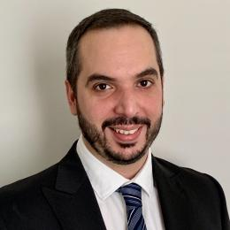

|
The Thirteenth International Workshop on
Accelerators and Hybrid Emerging Systems (AsHES) To be held in conjunction with 37th IEEE International Parallel and Distributed Processing Symposium St. Petersburg, Florida, USA (May 15, 2023) |
||
Opening Remarks
8:50 am - 9:00 am
Keynote
9:00 am - 10:00 am
Agnostic Programing: “Less is More”
Pedro Valero-Lara, Oak Ridge National Laboratory, US
Abstract:  In the Exa-scale and extreme heterogeneity era, programming is becoming an extremely expensive task. Current portable programming techniques, such as directive-based programming model, or more recently, the C++ template libraries, have been positioned as potential solutions with other approaches such as task-based runtimes or domain specific languages (DSLs). However, there is still a long way to walk towards a fully agnostic programming solution, where application developers don't have to worry about hardware/software constraints. In this talk, I will explore some current efforts that face such a challenge, providing some examples where less complicated programs are often more performing. Examples, of such efforts are the use and integration of performance models into the languages, as well as the exploitation of prescriptive approaches instead of descriptive ones. Future directions, such as the integration of AI-accelerated and -assisted techniques into programming solutions will be discussed and presented too.
Bio: Pedro Valero-Lara (PhD) is a Computer Scientist in the Programming Systems Group into the Advanced Computing Systems Research Section and Computer Science and Mathematics Division of Oak Ridge National Laboratory. The experience of Pedro is focused on high performance, parallel, and scientific computing/programming applied to numerous problems of research and industrial interest. His work is part of several reference software packages for scientific computing: Kokkos, IRIS, Cray/HPE LibSci-Acc, PLASMA, NVIDIA cuSparse, among others. Pedro was awarded by the IEEE-CS Early Career Researcher Award for Excellence in HPC in 2020, the Juan de la Cierva Fellowship in 2018, FPI-CIEMAT scholarship in 2011 and Microsoft Imagine Cup in 2009. Previously, he held different leading positions in industry, as Sr Research Engineer at Cray, and academia, as founder and lead of the Linear Algebra and Math Libraries unit at Barcelona Supercomputing Center. He has participating in numerous important projects, such as Exascale Computing Project, CORAL-2, Human Brain Project, among many others. Recently, his work “KokkACC: Enhancing Kokkos with OpenACC” was awarded as the best paper of the 9th Workshop on Accelerator Programming using Directives (WACCPD’22), held in conjunction with the International Conference for High Performance Computing, Networking, Storage and Analysis (SC’22).
Coffee Break
10:00 am - 10:30 am
Session 1: GPU Computing
10:30 am - 12:00 pm
-
10:30 am - 11:00 am
OpenMP Offload Features and Strategies for High Performance across Architectures and Compilers
Arijit Bhattacharjee, Christopher Daley and Ali Jannesari -
11:00 am - 11:30 am
Acceleration of a production Solar MHD code with Fortran standard parallelism: From OpenACC to `do concurrent'
Ronald Caplan, Miko Stulajter and Jon Linker -
11:30 am - 12:00 pm
Inviter Paper: Performance-portability study using tensor contraction benchmarks
Emin Ozturk, Omid Asudeh, Gerald Sabin, P Sadayappan and Aravind Sukumaran Rajam
Lunch Break
12:00 pm - 1:10 pm
Session 2: Emerging Architectures
1:10 pm - 2:40 pm
-
1:10 pm - 1:30 pm
Invited paper: An Artificial Matrix Generator for Multi-platform SpMV Performance Analysis
Dimitrios Galanopoulos, Panagiotis Mpakos, Petros Anastasiadis, Nectarios Koziris and Georgios Goumas -
1:30 pm - 2:00 pm
Fast Community Detection in Graphs with Infomap Method using Accelerated Sparse Accumulation
Md Abdul Motaleb Faysal, Maximilian Bremer, Shaikh Arifuzzaman, Doru Thom Popovici, John Shalf and Cy Chan -
2:00 pm - 2:20 pm
Invited Paper: Benchmarking and Optimizing Data Movement on Emerging Heterogeneous Architectures
Amanda Bienz -
2:20 pm - 2:40 pm
Towards xBGAS on CHERI: Supporting a Secure Global Memory
Mert Side, Brody Williams, John Leidel, Jonathan Woodruff, Simon W. Moore and Yong Chen